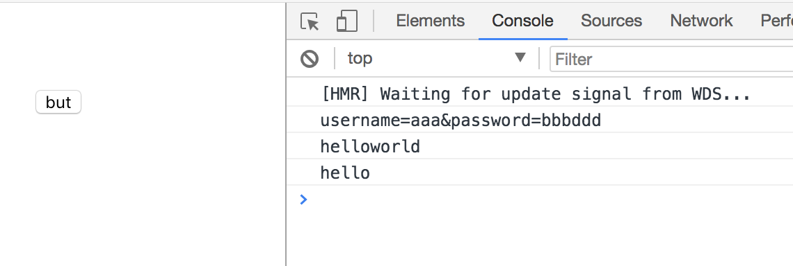
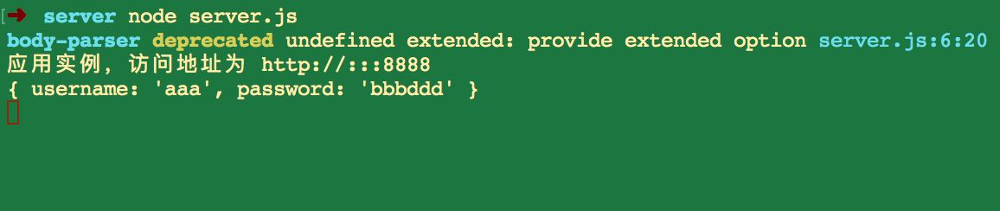

引言
在Vue2.0之前的项目中使用的是vue-resource进行网络请求，而在Vue2.0之后官方宣布不再继续更新vue-resource，而是推荐axios。
axios 是一个基于 promise 的 HTTP 库，可以用在浏览器和 node.js 中。
实例
一个简单的post请求：
1 | axios.post('/user', { |
axios支持PromiseAPI，请求响应成功以后可以在then()函数中获取响应的数据，如果请求发生错误就会进入catch()函数中。
本文重在讲述拦截器的使用。
一个带拦截器的post请求：
1.首先准备一个后端的server:
监听localhost的8888端口，提供一个post方式访问的/ans接口，如果请求成功则返回一个字符串。1
2
3
4
5
6
7
8
9
10
11
12
13
14
15
16
17
18
19
20
21
22
23
24
25
26
27// server.js
var fs = require('fs');
var path = require("path");
var express = require('express');
var app = express();
var bodyParser = require('body-parser');
app.use(bodyParser.urlencoded({
extend: false
}));
app.use(function(req, res, next) {
res.setHeader('Access-Control-Allow-Origin', '*');
res.setHeader('Access-Control-Allow-Methods', 'GET, POST');
res.setHeader('Access-Control-Allow-Headers', 'X-Requested-With,content-type, Authorization');
next();
});
app.post('/ans', function (req, res) {
console.log(req.body);
var ans = 'hello';
res.send(ans);
})
var server = app.listen(8888, function() {
var host = server.address().address;
var port = server.address().port;
console.log("应用实例，访问地址为 http://%s:%s", host, port);
});
2.准备一个vue页面用来调试:
先准备一个button来作为事件发起者：1
2
3<div class="hello">
<button @click="handleLogin" type="button" name="button">but</button>
</div>
在methods中准备一个事件响应button的click事件：
使用post方法请求localhost的8888端口。1
2
3
4
5
6
7
8
9
10
11
12
13
14
15
16
17
18
19
20
21data () {
return {
username: 'aaa',
password: 'bbb'
}
},
methods: {
handleLogin () {
let username = this.username
let password = this.password
axios.post('http://localhost:8888/ans', qs.stringify({
username: username,
password: password
})).then((response) => {
const data = response.data
console.log(data)
}).catch((err) => {
console.log(err)
})
}
}
3.重新封装一下axios:
在return之前可以对数据做一些处理，比如：
如果每个请求都需要带一个token验证操作是否合法，可以在return语句之前加一个验证：1
2
3if (store.getters.token) {
config.headers['X-Token'] = getToken()
// 让每个请求携带token-- ['X-Token']为自定义key
这里为了直观地表现出来，分别对request的数据和response数据加一个字符串。1
2
3
4
5
6
7
8
9
10
11
12
13
14
15
16
17
18
19
20
21
22
23
24// axios.js
import axios from 'axios'
axios.interceptors.request.use(
config => {
config.data = config.data + 'ddd'
console.log(config.data)
// 干一些想干的事情
return config
}, error => {
console.log(error)
Promise.reject(error)
}
)
axios.interceptors.response.use(
response => {
console.log(response.data + 'world')
// 干一些想干的事情
return response
}, error => {
console.log('res_err: ' + error)
return Promise.reject(error)
}
)
export default axios
4.启动Vue项目，启动server：
浏览器打开http://localhost:8080/#/，打开控制台：


可以直观地看见，点击button以后，由于拦截器的作用，请求的数据后面加上了’ddd’，返回的数据后面加上了’world’。